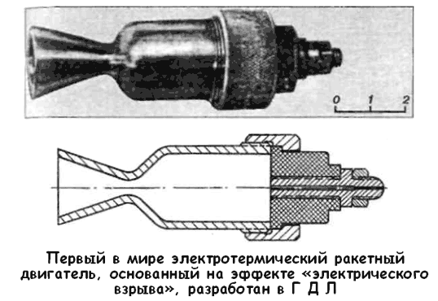
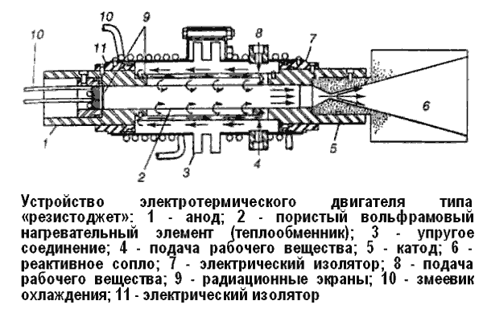
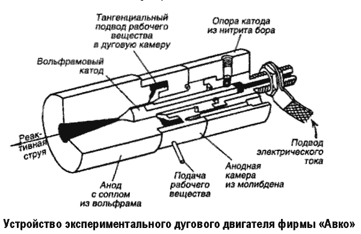

Электротермические двигатели
Нам уже известно, что одним из способов увеличения эффективности двигателей для космических кораблей является повышение температуры (а значит и скорости) истекающих газов. Но эту температуру можно поднимать не только с помощью химической реакции горения или посредством утилизации энергии радиоактивного распада — другим мощным источником тепла может служить электричество.
Идея электротермического ракетного двигателя обсуждается уже довольно давно. Еще в 1928 году, на самой заре развития реактивной техники, в нашей стране был выдвинут изобретательский проект такого двигателя. По этому проекту через тонкие металлические проволочки или струйки электропроводящей жидкости, находящиеся в камере сгорания, должны пропускаться с заданной частотой кратковременные мощные импульсы электрического тока. Начиная с мая 1929 года, в специально созданной группе электрических и жидкостных ракетных двигателей Газодинамической лаборатории (ГДЛ) в Ленинграде велись теоретические и экспериментальные исследования электротепловых двигателей, использующих явление «электрического взрыва». Работами руководил хорошо нам знакомый Валентин Петрович Глушко.

Через четыре года опыты продолжались уже с камерой, снабженной соплом. В результате разрядов тока происходил взрыв проводников с разогреванием образующихся газов до весьма высокой температуры — порядка 1 миллиона градусов, вследствие чего раскаленные продукты взрыва вытекали через сопло с огромной скоростью. После целой серии опытов сотрудники ГДЛ установили, что идеальным рабочим веществом для таких двигателей являются насыщенные водородом металлы: например, железо или палладий. При высокой температуре взрыва водород выделяется с поглощением части энергии; при охлаждении же продуктов он, воссоединяясь, выделяет поглощенную энергию, что ведет к общему увеличению к. п. д.
Однако развитие ракетных двигателей пошло, как известно, по другому направлению, и если электрические методы нагрева и получили некоторое применение в космической технике, то лишь для различных вспомогательных нужд: например, в электрозапальных устройствах, служащих для воспламенения топлива при запуске двигателя.
Интерес к электротермическим двигателям вновь проявился лишь в начале 70-х годов, когда стали очевидны принципиальные ограничения термохимических двигателей в отношении тяги.
В первую очередь вспомнили о схеме ГДЛ. Опыты с подобными двигателями проводились как у нас, так и в за рубежом.
В качестве рабочего вещества применялись проволочки диаметром в 1 миллиметр и длиной примерно 6,5 миллиметра из алюминия, железа, меди, золота, серебра, вольфрама и ряда других металлов. Внезапный разряд батареи конденсаторов, заряженных до напряжения 10–20 киловольт, через эти проволочки вызывал мгновенное возникновение в них тока силой в несколько тысяч ампер, что приводило к взрывному испарению материала проволочек. Как показали измерения, при этом развивалась температура выше 100 000 °C, а скорость истечения превышала 10 000 м/с с возможностью ее увеличения до 50 000 м/с!
Но если «электрический взрыв» представляет собой довольно экзотический метод нагрева, то хорошо известны другие способы, с помощью которых электрический ток используется в технике и быту для нагрева различных веществ.
Пожалуй, наиболее прост и известен метод конвективного нагрева жидкостей и газов с помощью электрических элементов сопротивления; ведь именно этот так называемый омический нагрев служит в бесчисленных электронагревателях самой различной мощности, начиная с обыкновенного утюга. Нагревательным элементом здесь служит металлическая трубка, проволока или пластина; их электрическое (омическое) сопротивление приводит к тому, что при течении тока они нагреваются — электрическая энергия переходит в тепловую. А затем получаемое тепло сообщается омывающему элемент газу или жидкости.
Создать электротермический двигатель на основе этого физического явления просто: достаточно в камере такого двигателя разместить электрический нагревательный элемент.
Правда, нагрев рабочего вещества будет ограничен допустимой температурой нагревательного элемента примерно так же, как в твердофазном ядерном реакторе, но зато двигатель будет сравнительно простым, небольшим и легким. За рубежом такие двигатели исследуются, они получили там название «резистоджет», что в переводе с английского звучит примерно как «ракетный двигатель на сопротивлении».

Нагревательный элемент «резистоджета» изготовляется из жароупорного металла (обычно из вольфрама, рения или их сплавов) и может нагреваться до 2650–2750°К. При удачной конструкции двигателя температура рабочего вещества лишь немногим меньше этой. Выгоднее всего, конечно, применять в качестве рабочего вещества водород, но используются также аммиак и другие вещества В случае водорода скорость истечения может достигать 10 000-11 000 м/с.
Один из двигателей типа «резистоджет» с многотрубчатым вольфрамовым теплообменником был разработан американской фирмой «Марквардт» («Marquardt») для использования в системах ориентации и стабилизации космических летательных аппаратов, в частности обитаемой орбитальной лаборатории «MORL», конструкцию которой мы обсуждали в главе 17. Электрическая мощность этого двигателя равна 3 кВт, концентрические трубки вольфрамового теплообменника имеют толщину всего ОД миллиметра. В ходе 25-часовых испытаний двигателя была получена скорость истечения 8400 м/с при к. п. д. 79 % и тяге двигателя 66,5 грамма. По другому предложению фирмы, на этой же орбитальной лаборатории могут быть установлены 1624 двигателя «резистоджет» тягой по 4,5 грамма, рабочим веществом для которых должны служить отходы жизнедеятельности космонавтов!
Фирма «Авко» («Avco») также разрабатывала двигатель «резистоджет» аналогичного назначения для системы стабилизации на орбите синхронного искусственного спутника Земли «ATS» весом около 450 килограммов. Двигатель мощностью всего примерно 7,5 Вт имеет диаметр 102 миллиметра, длину 280 миллиметров и вес 3,2 килограмма, он работает на аммиаке; его две независимо работающие тяговые камеры (движителя) диаметром 32 миллиметра развивают очень малую тягу 50 миллиграммов и 5 миллиграммов, они управляются клапанами, электрически связанными с электронным командным блоком.
Двигатель подобного типа был установлен на спутнике «ATS-B», выведенном на орбиту в декабре 1966 года. А в июле и ноябре 1967 года были выведены на орбиту экспериментальные спутники «LES» и «ATS-3», также оборудованные двигателями типа «резистоджет».

Сообщается и о ряде других экспериментальных электротермических двигателей: мощностью 30 кВт при скорости истечения 8600 м/с, мощностью 10 Вт с тягой порядка 0,5 грамма и так далее.
Первый из двигателей «резистоджет» нашел применение в космосе в системе ориентации военного спутника «Вела-3», запущенного в июле 1965 года. Мощность этого двигателя равна 90 Вт, тяга — 19 граммов. 19 сентября 1965 года с его помощью был осуществлен первый маневр в космосе.
В мае 1967 года двигатель «резистоджет» с тремя соплами обеспечивал ориентацию и маневрирование усовершенствованного спутника «Вела»; два таких спутника были запущены за месяц до этого, на каждом из них был установлен многосопловой двигатель «резистоджет» тягой каждого сопла 8,5 грамма. Двигатель весом 150 граммов работал на азоте.
Другой двигатель (фирмы «Дженерал Электрик») пульсирующего типа тягой 0,225 грамма прошел в 19661967 годы испытания в течение более 10 000 часов.